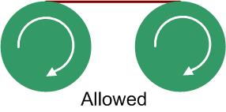
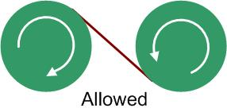
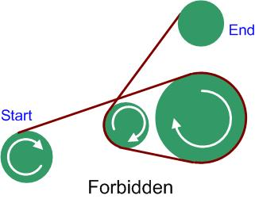
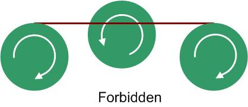
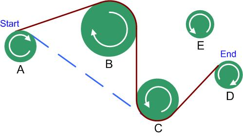

ICPC World Finals 2008 · Problem C
Many mechanical systems work with rotating shafts connected with conveyor belts. The shafts have a variety of sizes and rotate in either a clockwise or a counterclockwise manner. The exact way in which a belt will connect two shafts depends on their rotations, as shown in Figures 1 and 2.




One task in setting up such mechanical systems is to link together two given shafts, subject to these constraints:

As an example, consider the problem of connecting shaft A to shaft D in Figure 5. Suppose that the distance needed to connect A to C (shown in blue dashed line) or to connect B to D is greater than the limit allowed. Then the shortest distance to connect A to D is shown in solid line, going from shaft A to B to C and then D. Notice that the connection cannot go from B to E and then D as the belt would cross itself.
You must write a program that calculates the minimum length of the belt to connect the two given shafts.
The input consists of multiple test cases. Each test case starts with a line containing an integer N (1 ≤ N ≤ 20) indicating the number of shafts, numbered from 0 to N -1. Starting on the next line are N four-tuples of the form x y r s, where x and y are the integer coordinates of a shaft center, r is the integer radius of the shaft, and s is either “C” for clockwise or “CC” for counterclockwise (0 ≤ x, y ≤ 10000 and 0 < r ≤ 1000). Positive x is right and positive y is up. The first four-tuple specifies shaft 0, the second one shaft 1 and so on. These four-tuples may extend over multiple lines, though no four-tuple will be split across two lines. No two shafts touch or overlap. The last line of each test case contains two integers i and j indicating the starting and ending shafts, followed by a floating point value d specifying the maximum distance constraint.
The last test case is followed by a line containing a single zero.
For each test case, print the case number (starting with 1) followed by the length of the path of minimum distance. Print Cannot reach destination shaft if the destination shaft cannot be reached. Use the format shown in the sample output.
When measuring the distance, start where the belt first leaves the starting shaft and end where the belt first touches the ending shaft. Your distance calculation must include both the length of belt between shafts as well as the distance the belt travels around intermediate shafts. Your answer should be rounded to the nearest hundredth, though you need not print trailing zeroes after the decimal point.
5 24 50 14 C 93 78 20 C 118 8 15 CC 167 32 13 C 159 88 15 CC 0 3 82.5 5 24 50 14 C 93 78 20 C 118 8 15 CC 167 32 13 C 159 88 15 C 0 3 82.5 5 24 50 14 C 93 78 20 C 118 8 15 CC 167 32 13 C 159 88 15 C 0 3 8.5 0
Case 1: length = 271 Case 2: length = 228.23 Case 3: Cannot reach destination shaft